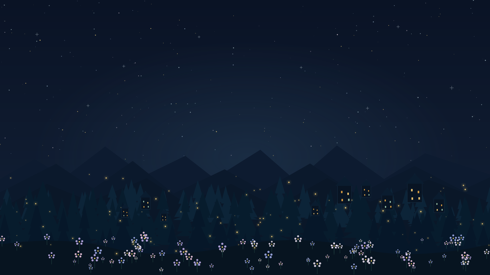
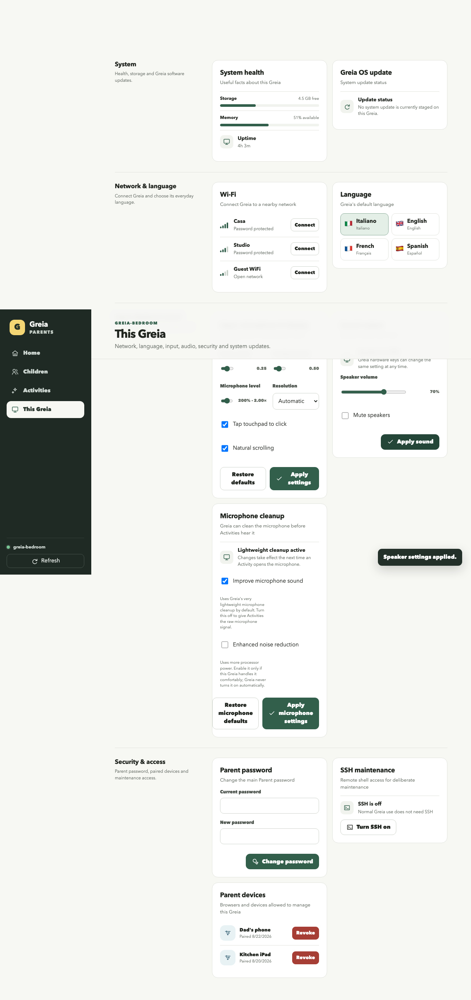

Offline by default
Core play, saves, profiles and parent management are designed to work without a cloud account or continuous Internet connection.

A CHILD-FIRST COMPUTER · SHAPED BY PARENTS
An imaginative place to draw, write, play and discover. A reliable system underneath. A useful second life for computers already here.
01 / INSIDE GREIA
The pictures below come from Greia development and Simulator runs. Browse the actual child Shell and Activities; enlarge any frame to see the details. They show the product in progress, not a polished release build.
A screenshot can show a screen and interaction state. It cannot by itself prove installed-device performance, release safety or every Activity's final quality.
02 / THE REASON IT EXISTS
The first-generation Acer Aspire One is Greia's extreme reference machine. That constraint is part of the mission: make a real creative computer for a child without treating yesterday's working hardware as disposable.
THE EXTREME REFERENCE
Greia keeps the earliest Aspire One in view when making decisions about memory, storage, responsiveness and legibility. If a feature only works on a fast development laptop, it is not enough.
These Acer numbers are planning estimates pending inventory and physical acceptance, not a compatibility guarantee.
Core play, saves, profiles and parent management are designed to work without a cloud account or continuous Internet connection.
ARM devices are first-class alongside legacy x86. The child should learn Greia once, while hardware differences stay below the experience.
One curated runtime per family, bounded caches and prepared artwork keep rich Activities from turning a little computer into a slow one.
03 / A SIMPLE EXPERIENCE, A SERIOUS FOUNDATION
Greia is not a desktop theme hiding Linux windows. The child moves between their profile, the Greia Shell and Activities. The platform keeps the shared rules consistent while each Activity brings its own idea.
01 / THE CHILD'S WORLD
Each child explicitly chooses a Greia profile. The Shell presents Activities in understandable Collections, and Greia keeps a real Home control available above an Activity so a child always has a way back.
Activities declare an interaction profile such as pointer, directional, game, text or hybrid. Greia translates the actual keyboard, touch or controller into that intent. A simple game can teach arrows + Space once and reuse the lesson elsewhere.
An Activity can be independently authored, but its package still passes validation, declared capabilities, compatibility and sandbox rules. Parent visibility is a separate decision. Installed does not mean automatically shown to every child.
Writing and Painting autosave through Greia's profile-scoped storage. Backups are designed as portable logical data, not an architecture-specific disk dump. Uninstalling an Activity preserves its child data by default.
04 / GREIA PARENTS
The parent side lives in a separate browser app served by Greia. It talks to a versioned Parent API, so choosing Activities or changing a setting never asks a family to operate Linux.

ONE CHILD AT A TIME
A child picks their own profile at boot. Their writing, drawings, Activity data, progress and language preferences belong to that profile, rather than spilling into a sibling's world.
The displayed Parent screenshot is from a development acceptance run. Its controls are capability-gated and release pairing/transport work remains open.
Age suitability and difficulty are separate. Parents can always show or always hide an individual Activity, and Greia applies that choice before building the child's visible catalogue.
Supported controls include network and language, display modes, pointer settings, speaker volume and microphone options. A control appears only when Greia reports the capability.
Parent clients pair with a specific Greia. Core management does not need a cloud account; credentials and privileged operations stay behind Greia-owned boundaries.
05 / ACTIVITIES MADE FOR A REAL CHILD
A train phase, a family garden, a favourite animal, a bedtime story. Greia's open Activity contract creates room for experiences with personal meaning, while validation and parent authority keep a shared device dependable.
Start with their interest
Then choose how they play
Plant a seed, draw what grows and come back to notice the change. A child can make this place feel like theirs.

.greiaactivity file enters the Parent-authorized install flow. Its source and trust must be clear.TODAY: authoring guides, validator, Simulator and bounded new-install service exist. A guided family-facing Creation Pack and complete ordinary-release install/update path are still being built.
06 / CHARACTERS WITH A JOB TO DO
A character can welcome, demonstrate or encourage. Their speech is produced and reviewed while an Activity is authored, then played back as a small recording. The child device does not need a live speech model to make a moment feel alive.

“Hi! I'm Lilli! I love making up stories, drawing colorful things, and finding a little magic everywhere. Got a silly idea? Come with me!”
The shared voice library has an accepted v0.2 collection of generic reactions and introductions. Human listening is part of approval. Where and when each clip belongs in a live Activity is a separate integration decision.
Speech should help a child understand or connect, not fill every quiet moment. The picture, controls and scene should still make sense without constant narration.
07 / THE DETAILS PARENTS ASK
Greia is a living open-source project, not an ordinary family release yet. Here is the promise, the current implementation direction and the work that still needs proof.
It is a child-facing computing platform built on Linux. In normal use the child sees Greia Shell, profile selection and Activities. Linux provides the underlying services but its desktop, terminal and file manager are not the child experience.
Offline-first is a core product contract: the Shell, built-in Activities, profile saves and local Parent management should work without a cloud account. Optional network features can be added without making ordinary play dependent on them.
The first-generation Acer Aspire One is the extreme low-resource reference. Raspberry Pi 400 and 500 are first-class ARM targets. This is a design and acceptance programme; it is not yet a blanket claim that every machine has passed release testing.
Yes. Painting and Writing are mandatory first-party Activities for the first user-ready image. Their source includes large child-sized controls, profile-scoped autosave and creative galleries. Hardware and final image acceptance still need their named gates.
Greia Parents can manage a child's visible Activity set. Parents can apply age and difficulty intent and explicit always-show or always-hide choices. Installing a package, trusting it and showing it to a child remain separate decisions.
The open Activity contract, authoring guidance, validation tools and development Simulator exist. The normal independent package is a .greiaactivity file and parent approval is required for installation. The easy family-facing Creation Pack and the complete release install/update lifecycle remain under development.
No. Character lines are generated or recorded during authoring, reviewed by people and stored as small audio files for playback. Greia does not run a narration model on the child's low-resource machine during ordinary play.
Saves and creations belong to explicit child profiles. Greia's backup contract is logical and portable across hardware architectures, and uninstalling an Activity preserves its child data by default. Complete family backup and restore acceptance is still part of release work.